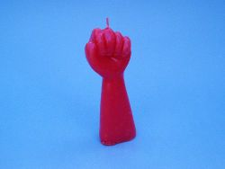

Vela
 De: La Frikipedia, la enciclopedia extremadamente seria.
De: La Frikipedia, la enciclopedia extremadamente seria.
Una vela es un cilindro o cualquier cosa que ilumine(puede ser de cualquier forma).Usado ampliamente en todo el mundo.Actualmente ha caído en desuso ya que las lamparitas son mejores.
 Una vela puede tener cualquier forma
Funciones de una vela
- Una vela sirve para iluminar tu choza cuando hay un super apagón y te re caga por que no podes hacer una mierda.
- Ahora casi ya no se usan mas las velas pero para un momento romántico unas velas estarían muy bien.....
- Lo podes usar cuando queres contar una historia de terror...
- Intenta depilarte con cera de una vela (lo unico que va a conseguir es que se te quede la cera pegada y acumular mierda en tu vello corporal.(no se lo recomiendes a tu novia, quedará más fea que antes).
Un experimento con la vela:
- Aclaración: si usted no es un Emo como Hidan no lo tiene que hacer (yo no soy Emo y no tengo nada contra ellos...)
- Comparación del niño emo con hidan
Enciende una vela de cualquier tamaño. Verás que se empieza a derretir la parafina (???) o sea la cera y se desprende un olor muy agradable (por lo menos para mi). Ponga un dedo al lado de la vela, solo sentirá un poco de calorcito bastante agradable. Pero si lo pone arriba de la vela sentirá una sensación de calor extremo en los dedos, el calor se propaga rápidamente por toda esta zona y va a oler un olor punzante y desagradable a piel y pelo quemado.
- Si resiste solo 2 segundos es un marica total, no es hombre!
- Si resiste hasta 5 seg. para personas como tu esta muy bien!
- Si resiste hasta 10 seg. ya tiene qe sacar el dedo por su propio bien.
- Si resiste mas de 10 seg. no hay duda, usted es definitivamente un EMO.
Después de retirarlo, empezara un dolor agudo y profundo, si no lo siente, usted esta en problemas, probablamente pierda el dedo.
Es aconsejable mojar el dedo con agua fría y ponerse un hielo. El dedo se va a hinchar de forma sorprendente.
La piel que fue afectada por el fuego se verán muy feos y asquerosos. Es preferible ponerse unas vendas.
Después de unos días o semanas e incluso meses se recuperara pero tendrá que pasar unos tormentosos días de dolor, angustia y alegria.
- Dolor: por que es realmente doloroso, usted puede hacer la prueba.
- Angustia: no sabia que era tan doloroso y todos tus amigos se reirán de ti por ser tan boludo de hacer esto.
- Alegria: todos tus amigos se van a hacer mas amigos de ti y estarán contigo todos los días (eso puede ser una gran mentira).
ATENCION: los críos deben hacerlo con la supervisación y la autorización de sus propios padres
por que nadie se hace cargo de los daños materiales o corpolares que este experimento puede causar.
Sabías que...???
- ... una vela encencida en una zona de completa oscuridad y en condiciones atmosfericas favorables, se puede ver su llama desde una distancia de 6 km? ( solo tipos de Akatsuki como el loquito de Deidara o el canibal racista de Zetsu).
- ...una vela encendida puede incendiar a toda una ciudad? (al menos qe sepas hacer Katon: Goukakyuu no jutsu)
- ...te volveras muy popular si haces esta experiencia?(si es que aun tienes los 10 dedos)
Véase también:
Autor(es):
- Frikiman
- Aque
- Roms
- Azulejos
- El Sevillano
- Move Zig
- NRikee
- Tobi
- Dark temptation
- Caca2
Frikipedia 2005-2016, Licencia
GFDL 1.2 - Extraído por FrikiLeaks